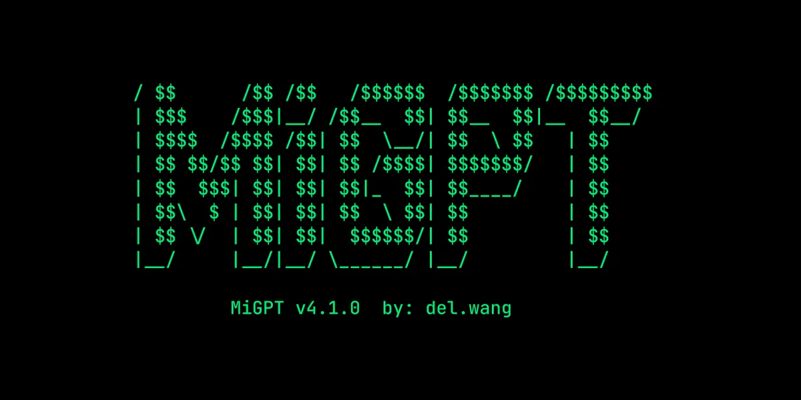

← Back to all routesImage published on the upstream source page for “MiGPT”; no separate image license was stated. View image source ↗
MiGPT
- Add language-model conversations to XiaoAI speakers through a server-side bridge.
- 4/5 dimensions have verifiable sources
- Only dimensions backed by verifiable sources are included; unevidenced dimensions remain null rather than receiving a neutral placeholder.

What it can become
- Voice assistant
- Hardware scope Xiaomi XiaoAI speakers listed in the documented compatibility table.
- Category Speakers & voice
- AI relationship AI functionality
- Route type Platform / multi-device project
- Sources last checked 2026-10-20
Before you start
- Method Service bridge
- Difficulty Intermediate
- Disassembly Not required
- Soldering Not required
- Cloud API / service Xiaomi service required
- Stop condition A historical route; read the archive notice and successor recommendations first.
- Firmware Unknown
- Region Unknown
- Used-price range No reliable source
- Modification cost No reliable source
- Possible cost Always-on host
- Possible cost Model/TTS API
Risk and recovery
- Data-loss risk Possible
- Bricking / boot-failure risk Workflow-dependent
- Recovery route Stop the Docker/Node service to stop bridging; the original speaker firmware is retained.
- Recovery guide ↗ (no verified link)
Evidence, maintenance, and sources
- E1 · Source code & deployment docs The README contains installation, model connection and device compatibility instructions and explicitly announces the end of maintenance.
- Hands-on status KitAgain has not tested this device hands-on.
- Maintenance Archived
- Last GitHub push 2026-04-04T07:53:49Z
- Repository license MIT
- A recent push does not prove model compatibility, and a root license does not automatically cover firmware, models, brands, or third-party components.
- Upstream documentation ↗2026-10-20Use this to understand the outcome, how to start and the limits stated by the project.https://github.com/idootop/mi-gpt/blob/main/README.md
Project identity and verified author profiles
- idootop · GitHub ↗ — Source-repository owner account; this does not establish sole authorship